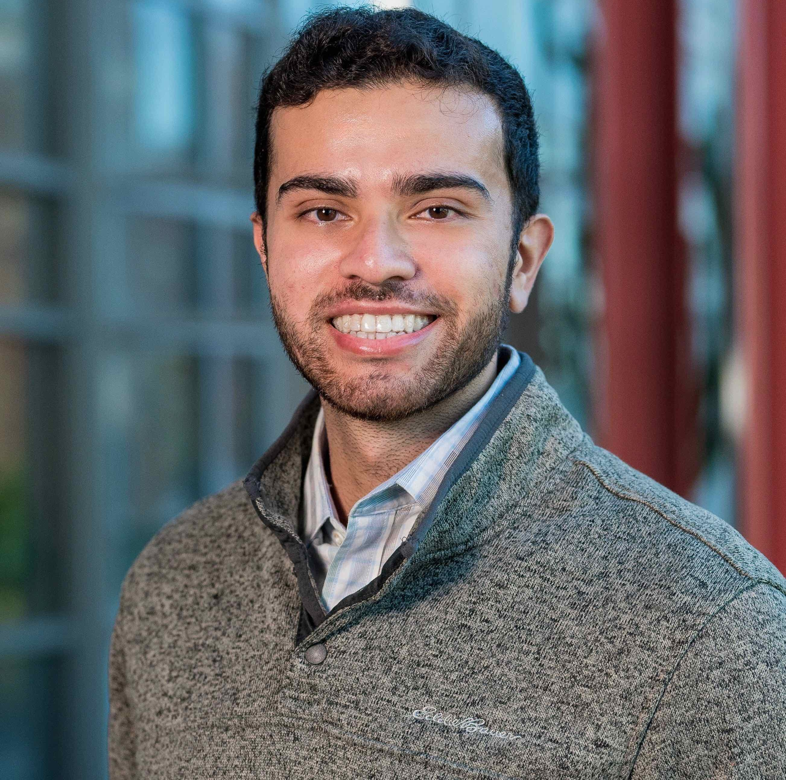

Contact Me
Email: aliz2 AT illinois DOT edu
I am a fifth year Ph.D. candidate at the University of Illinois, Urbana-Champaign, advised by Professor Karrie Karahalios and Professor Ranjitha Kumar. My research is in the field of Human-Centered AI Design. I investigate how we can design AI to address underlying systemic issues by working directly with stakeholders. My work is interdisciplinary and spans the entire design process, from needfinding to building and evaluating solutions. I specialize in qualitative human-computer interaction (HCI) methods, such as interview, design probe, and participatory design approaches.
Currently, I am researching how to design AI technologies to assist parents of children with special needs to more effectively advocate for their children in schools. In the past, I have also worked with doctors to understand how to design AI for concussion evaluation, as well as with UX designers to build ML-based systems to assist in user experience research. I have also conducted user-centered evaluations of existing IoT/Smart Home infrastructures.